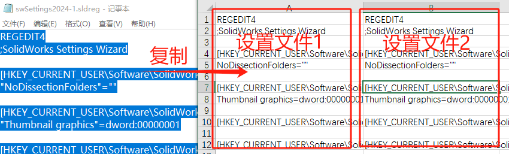
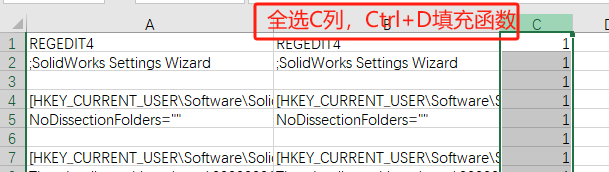
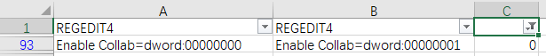
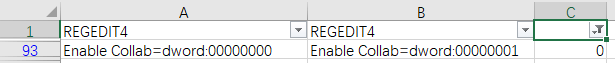
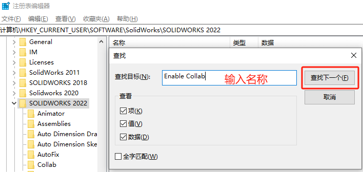
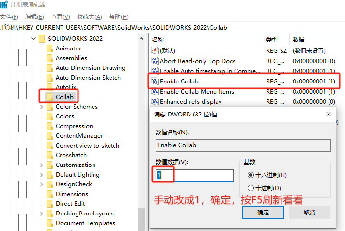

查找设置在注册表位置
导出设置

在菜单栏，【工具-保存/恢复设置】保存是否勾选的设置文件2份（swSetting.sldreg）
- 勾 选——保存设置文件1份
- 未勾选——保存设置文件1份
数据对比
使用文本编辑器，打开保存设置的数据，新建Excel用来对比数据设置差异。

将数据复制到Excel A列里面，
设置同值判断函数：“=IF(A1=B1,1,0)”

应用填充函数
查找结果
设置筛选

按结果差异值进行筛选，结果为0的行，就是设置差异的选项了
 

查找注册表
在注册表里，定位到当前SW版本。Ctrl+F进行“项名称”查找。
这里就是SW设置在注册表体现的内容了，通过修改此处也能影响SW的选项设置
（注意：注册表的设置，需要SW程序在完全退出的状态下修改，不然会和现有的程序设置进行冲突导致注册表设置失败）
